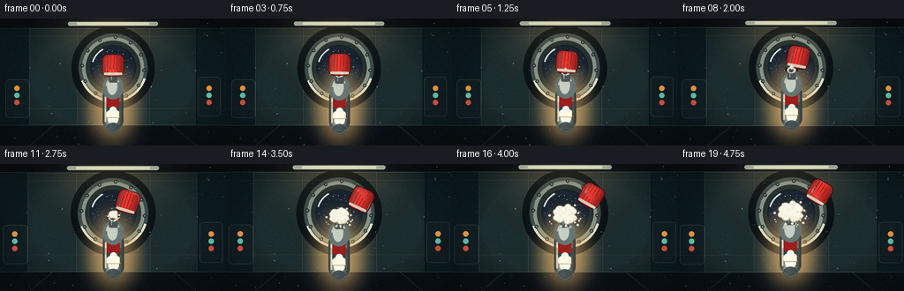
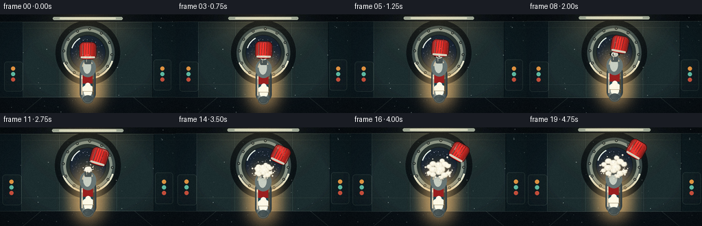
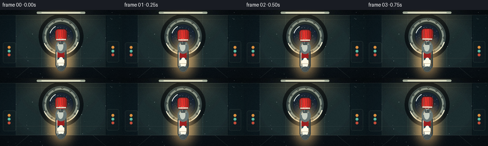

CODING AGENTS AS PIXEL WORLD MODELS
traex/DeepSeek-V4.1-Flash · mechanics_0006
点击播放 · 原生 RGB 像素
逐轮保存的候选
回放视频、检查图与代码变化。
每份候选均可单独播放。实际图片检查记录在下方工具轨迹中。
候选 01播放与检查图
点击播放 · 原生 RGB 像素

展开代码变化
--- 上一保存版本
+++ 本次保存版本
@@ -0,0 +1,798 @@
+"""Procedural zero-gravity whipped-cream shot for PixelWorld."""
+
+from __future__ import annotations
+
+import math
+from pathlib import Path
+
+import numpy as np
+from PIL import Image, ImageChops, ImageDraw, ImageFilter
+
+import artifact_io
+
+
+ROOT = Path(__file__).resolve().parent
+WIDTH, HEIGHT = 256, 144
+FRAMES, FPS = 20, 4.0
+SCALE = 4
+SW, SH = WIDTH * SCALE, HEIGHT * SCALE
+
+
+def clamp(value: float, low: float = 0.0, high: float = 1.0) -> float:
+ return max(low, min(high, value))
+
+
+def smoothstep(value: float) -> float:
+ value = clamp(value)
+ return value * value * (3.0 - 2.0 * value)
+
+
+def mix(a: tuple[int, ...], b: tuple[int, ...], t: float) -> tuple[int, ...]:
+ return tuple(round(x + (y - x) * t) for x, y in zip(a, b))
+
+
+def vertical_gradient(
+ width: int, height: int, top: tuple[int, int, int], bottom: tuple[int, int, int]
+) -> Image.Image:
+ y = np.linspace(0.0, 1.0, height, dtype=np.float32)[:, None, None]
+ colors = np.asarray(top, dtype=np.float32) * (1.0 - y) + np.asarray(
+ bottom, dtype=np.float32
+ ) * y
+ pixels = np.repeat(colors, width, axis=1).astype(np.uint8)
+ return Image.fromarray(pixels)
+
+
+def radial_rgba(
+ size: tuple[int, int],
+ center: tuple[float, float],
+ radius: float,
+ color: tuple[int, int, int, int],
+) -> Image.Image:
+ width, height = size
+ yy, xx = np.mgrid[0:height, 0:width]
+ distance = np.hypot(xx - center[0], yy - center[1]) / max(radius, 1.0)
+ alpha = np.clip(1.0 - distance, 0.0, 1.0) ** 2 * color[3]
+ pixels = np.zeros((height, width, 4), dtype=np.uint8)
+ pixels[:, :, :3] = color[:3]
+ pixels[:, :, 3] = alpha.astype(np.uint8)
+ return Image.fromarray(pixels)
+
+
+def make_background() -> Image.Image:
+ background = vertical_gradient(SW, SH, (8, 17, 23), (31, 43, 45)).convert("RGBA")
+ draw = ImageDraw.Draw(background, "RGBA")
+
+ # Receding station wall, side ribs, and floor.
+ draw.polygon(
+ [(0, 0), (int(SW * 0.17), 0), (int(SW * 0.13), SH), (0, SH)],
+ fill=(12, 25, 31, 255),
+ )
+ draw.polygon(
+ [(int(SW * 0.83), 0), (SW, 0), (SW, SH), (int(SW * 0.87), SH)],
+ fill=(13, 27, 32, 255),
+ )
+ draw.rectangle((0, int(SH * 0.84), SW, SH), fill=(9, 16, 21, 255))
+ draw.line((0, int(SH * 0.84), SW, int(SH * 0.84)), fill=(73, 91, 91, 190), width=2)
+
+ # Broad wall panels with soft metallic bevels.
+ for x0, x1 in (
+ (int(SW * 0.13), int(SW * 0.34)),
+ (int(SW * 0.34), int(SW * 0.66)),
+ (int(SW * 0.66), int(SW * 0.87)),
+ ):
+ draw.rectangle((x0, int(SH * 0.06), x1, int(SH * 0.84)), fill=(27, 43, 46, 110))
+ draw.line((x0, int(SH * 0.06), x0, int(SH * 0.84)), fill=(70, 91, 91, 90), width=2)
+ draw.line((x1, int(SH * 0.06), x1, int(SH * 0.84)), fill=(5, 15, 20, 170), width=3)
+
+ draw.rectangle((0, 0, SW, int(SH * 0.075)), fill=(8, 16, 21, 240))
+ draw.line((0, int(SH * 0.075), SW, int(SH * 0.075)), fill=(93, 110, 106, 100), width=2)
+ draw.rounded_rectangle(
+ (int(SW * 0.30), int(SH * 0.025), int(SW * 0.70), int(SH * 0.058)),
+ radius=int(3 * SCALE),
+ fill=(185, 205, 190, 120),
+ )
+ draw.rounded_rectangle(
+ (int(SW * 0.34), int(SH * 0.032), int(SW * 0.66), int(SH * 0.049)),
+ radius=int(2 * SCALE),
+ fill=(237, 243, 219, 215),
+ )
+
+ # A porthole gives an unmistakable orbital setting without stealing focus.
+ cx, cy, outer = SW // 2, int(SH * 0.39), int(39 * SCALE)
+ for radius, fill in (
+ (outer + 8 * SCALE, (8, 16, 20, 255)),
+ (outer, (55, 70, 70, 255)),
+ (outer - 4 * SCALE, (131, 143, 132, 255)),
+ (outer - 8 * SCALE, (25, 38, 40, 255)),
+ (outer - 13 * SCALE, (5, 12, 19, 255)),
+ ):
+ draw.ellipse((cx - radius, cy - radius, cx + radius, cy + radius), fill=fill)
+
+ window_radius = outer - 14 * SCALE
+ window_box = (
+ cx - window_radius,
+ cy - window_radius,
+ cx + window_radius,
+ cy + window_radius,
+ )
+ space = Image.new("RGBA", (SW, SH), (0, 0, 0, 0))
+ space_pixels = np.zeros((SH, SW, 4), dtype=np.uint8)
+ yy, xx = np.mgrid[0:SH, 0:SW]
+ radial = np.hypot((xx - cx) / window_radius, (yy - cy) / window_radius)
+ space_pixels[:, :, 0] = np.clip(2 + radial * 5, 0, 255)
+ space_pixels[:, :, 1] = np.clip(8 + radial * 13, 0, 255)
+ space_pixels[:, :, 2] = np.clip(17 + radial * 24, 0, 255)
+ space_pixels[:, :, 3] = 255
+ space = Image.fromarray(space_pixels)
+ space_draw = ImageDraw.Draw(space, "RGBA")
+
+ rng = np.random.default_rng(7719)
+ for _ in range(115):
+ angle = rng.uniform(0, math.tau)
+ radius = math.sqrt(rng.uniform(0, 1)) * (window_radius - 2 * SCALE)
+ sx = round(cx + math.cos(angle) * radius)
+ sy = round(cy + math.sin(angle) * radius)
+ size = int(rng.choice([1, 1, 1, 2, 2, 3]))
+ tint = int(rng.integers(165, 246))
+ alpha = int(rng.integers(95, 225))
+ space_draw.ellipse((sx, sy, sx + size, sy + size), fill=(tint, tint, 255, alpha))
+
+ # Earth's blue limb and a thin atmospheric edge.
+ earth_box = (
+ int(cx - 260 * SCALE / 4),
+ int(cy + 42 * SCALE),
+ int(cx + 310 * SCALE / 4),
+ int(cy + 500 * SCALE),
+ )
+ space_draw.ellipse(earth_box, fill=(15, 60, 103, 255))
+ space_draw.ellipse(
+ (earth_box[0] + 7 * SCALE, earth_box[1] + 7 * SCALE, earth_box[2], earth_box[3]),
+ fill=(22, 79, 119, 255),
+ )
+ for yoff, color in ((70, (58, 130, 151, 135)), (92, (92, 158, 162, 65))):
+ space_draw.arc(
+ (
+ earth_box[0] - 3 * SCALE,
+ earth_box[1] + yoff * SCALE,
+ earth_box[2] + 3 * SCALE,
+ earth_box[3],
+ ),
+ 188,
+ 352,
+ fill=color,
+ width=2 * SCALE,
+ )
+ for xoff, yoff, length in ((-35, 145, 35), (30, 135, 28), (90, 172, 24)):
+ space_draw.arc(
+ (
+ cx + xoff * SCALE,
+ cy + yoff * SCALE,
+ cx + (xoff + length) * SCALE,
+ cy + (yoff + 12) * SCALE,
+ ),
+ 190,
+ 330,
+ fill=(211, 232, 229, 95),
+ width=2 * SCALE,
+ )
+
+ window_mask = Image.new("L", (SW, SH), 0)
+ ImageDraw.Draw(window_mask).ellipse(window_box, fill=255)
+ background.paste(space, (0, 0), window_mask)
+ draw = ImageDraw.Draw(background, "RGBA")
+
+ # Glass and rim highlights.
+ for start, end, alpha, width in (
+ (196, 242, 120, 2 * SCALE),
+ (208, 232, 80, 1 * SCALE),
+ ):
+ draw.arc(
+ (cx - window_radius, cy - window_radius, cx + window_radius, cy + window_radius),
+ start,
+ end,
+ fill=(211, 232, 230, alpha),
+ width=width,
+ )
+ draw.arc(
+ (cx - outer, cy - outer, cx + outer, cy + outer),
+ 18,
+ 158,
+ fill=(219, 225, 205, 125),
+ width=3 * SCALE,
+ )
+ for index in range(12):
+ angle = math.tau * index / 12 + 0.08
+ bx = round(cx + math.cos(angle) * (outer - 4 * SCALE))
+ by = round(cy + math.sin(angle) * (outer - 4 * SCALE))
+ bolt = 2 * SCALE
+ draw.ellipse((bx - bolt, by - bolt, bx + bolt, by + bolt), fill=(22, 31, 32, 255))
+ draw.ellipse(
+ (bx - bolt + SCALE, by - bolt + SCALE, bx + bolt - SCALE, by + bolt - SCALE),
+ fill=(112, 122, 115, 255),
+ )
+
+ # Side consoles, deliberately low contrast so the central action reads first.
+ draw.rounded_rectangle(
+ (int(SW * 0.025), int(SH * 0.48), int(SW * 0.13), int(SH * 0.78)),
+ radius=4 * SCALE,
+ fill=(17, 31, 35, 235),
+ outline=(69, 86, 83, 150),
+ width=2,
+ )
+ draw.rounded_rectangle(
+ (int(SW * 0.875), int(SH * 0.46), int(SW * 0.975), int(SH * 0.77)),
+ radius=4 * SCALE,
+ fill=(17, 31, 35, 235),
+ outline=(69, 86, 83, 150),
+ width=2,
+ )
+ for side in ("left", "right"):
+ if side == "left":
+ x = int(SW * 0.075)
+ else:
+ x = int(SW * 0.925)
+ for j, color in enumerate(
+ ((240, 157, 68, 220), (104, 205, 178, 180), (222, 88, 67, 170))
+ ):
+ y = int(SH * (0.55 + j * 0.055))
+ draw.ellipse((x - 3 * SCALE, y - 3 * SCALE, x + 3 * SCALE, y + 3 * SCALE), fill=color)
+
+ # Fine seams and floor perspective.
+ for y in (int(SH * 0.14), int(SH * 0.71), int(SH * 0.84)):
+ draw.line((0, y, SW, y), fill=(91, 108, 103, 55), width=1)
+ draw.line(
+ (int(SW * 0.13), SH, int(SW * 0.24), int(SH * 0.84)),
+ fill=(85, 101, 96, 80),
+ width=2,
+ )
+ draw.line(
+ (int(SW * 0.87), SH, int(SW * 0.76), int(SH * 0.84)),
+ fill=(85, 101, 96, 80),
+ width=2,
+ )
+
+ # Warm ceiling spill and cool window bounce.
+ warm = radial_rgba((SW, SH), (SW * 0.49, -SH * 0.08), SH * 0.82, (255, 192, 107, 45))
+ cool = radial_rgba((SW, SH), (cx, cy), outer * 1.35, (93, 188, 197, 28))
+ background = Image.alpha_composite(background, warm)
+ background = Image.alpha_composite(background, cool)
+
+ # Gentle vignette.
+ yy, xx = np.mgrid[0:SH, 0:SW]
+ vignette = np.hypot((xx - SW / 2) / (SW * 0.68), (yy - SH / 2) / (SH * 0.72))
+ vignette = np.clip((vignette - 0.52) * 0.60, 0.0, 0.38)
+ shade = Image.fromarray(
+ np.dstack(
+ (
+ np.zeros((SH, SW), dtype=np.uint8),
+ np.zeros((SH, SW), dtype=np.uint8),
+ np.zeros((SH, SW), dtype=np.uint8),
+ (vignette * 255).astype(np.uint8),
+ )
+ )
+ )
+ return Image.alpha_composite(background, shade)
+
+
+BACKGROUND = make_background()
+
+
+def make_cap() -> Image.Image:
+ width, height = 116, 122
+ cap = Image.new("RGBA", (width, height), (0, 0, 0, 0))
+ yy, xx = np.mgrid[0:height, 0:width]
+ nx = (xx - width * 0.44) / (width * 0.55)
+ highlight = np.exp(-(nx * nx) * 2.2)
+ pixels = np.zeros((height, width, 4), dtype=np.uint8)
+ pixels[:, :, 0] = np.clip(112 + highlight * 135, 0, 255)
+ pixels[:, :, 1] = np.clip(21 + highlight * 32, 0, 255)
+ pixels[:, :, 2] = np.clip(19 + highlight * 27, 0, 255)
+ pixels[:, :, 3] = 255
+ cap = Image.fromarray(pixels)
+ mask = Image.new("L", (width, height), 0)
+ mask_draw = ImageDraw.Draw(mask)
+ mask_draw.rounded_rectangle((8, 12, width - 8, height - 10), radius=27, fill=255)
+ cap.putalpha(mask)
+
+ draw = ImageDraw.Draw(cap, "RGBA")
+ draw.rounded_rectangle(
+ (8, 12, width - 8, height - 10),
+ radius=27,
+ outline=(69, 10, 12, 235),
+ width=3,
+ )
+ draw.rounded_rectangle(
+ (14, 18, width - 14, height - 16),
+ radius=22,
+ outline=(255, 125, 105, 70),
+ width=2,
+ )
+ draw.line((27, 28, 27, height - 31), fill=(255, 156, 128, 105), width=4)
+ draw.rounded_rectangle((16, height - 27, width - 16, height - 16), radius=5, fill=(226, 218, 198, 235))
+ for x in range(34, 90, 14):
+ draw.line((x, 18, x - 3, height - 29), fill=(82, 12, 14, 65), width=2)
+ return cap
+
+
+CAP = make_cap()
+
+
+def canister_state(index: int) -> dict[str, float]:
+ bob = math.sin(index * 0.55 + 0.4) * 2.3 * SCALE
+ return {
+ "cx": SW / 2 + math.sin(index * 0.23) * 0.7 * SCALE,
+ "top": 303 * SCALE / 4 + bob,
+ "bottom": 505 * SCALE / 4 + bob,
+ "nozzle_y": 238 * SCALE / 4 + bob,
+ "bob": bob,
+ }
+
+
+def draw_canister(canvas: Image.Image, index: int) -> dict[str, float]:
+ state = canister_state(index)
+ cx = state["cx"]
+ top = state["top"]
+ bottom = state["bottom"]
+ width = 94 * SCALE / 4
+ left = cx - width / 2
+ right = cx + width / 2
+
+ # A faint warm halo separates the can from the cool background.
+ glow_mask = Image.new("L", (SW, SH), 0)
+ ImageDraw.Draw(glow_mask).rounded_rectangle(
+ (left - 9 * SCALE, top - 18 * SCALE, right + 9 * SCALE, bottom + 9 * SCALE),
+ radius=18 * SCALE,
+ fill=155,
+ )
+ glow_mask = glow_mask.filter(ImageFilter.GaussianBlur(10 * SCALE))
+ glow = Image.new("RGBA", (SW, SH), (240, 188, 116, 32))
+ glow.putalpha(glow_mask)
+ canvas.alpha_composite(glow)
+
+ # Brushed-metal body.
+ body_w = int(round(width))
+ body_h = int(round(bottom - top))
+ body_x = int(round(left))
+ body_y = int(round(top))
+ u = np.linspace(0.0, 1.0, body_w, dtype=np.float32)
+ stops = np.array([0.0, 0.12, 0.32, 0.45, 0.58, 0.80, 1.0], dtype=np.float32)
+ colors = np.array(
+ [
+ (50, 62, 65),
+ (91, 104, 104),
+ (196, 202, 190),
+ (242, 240, 219),
+ (174, 185, 181),
+ (87, 102, 104),
+ (45, 57, 61),
+ ],
+ dtype=np.float32,
+ )
+ columns = np.stack(
+ [np.interp(u, stops, colors[:, channel]) for channel in range(3)], axis=1
+ )
+ body_pixels = np.repeat(columns[None, :, :], body_h, axis=0)
+ # Vertical falloff keeps the cylinder from looking flat.
+ v = np.linspace(0.0, 1.0, body_h, dtype=np.float32)[:, None]
+ body_pixels *= (1.02 - 0.12 * v)[:, :, None]
+ body = Image.fromarray(np.clip(body_pixels, 0, 255).astype(np.uint8)).convert("RGBA")
+ body_mask = Image.new("L", (body_w, body_h), 0)
+ ImageDraw.Draw(body_mask).rounded_rectangle(
+ (0, 0, body_w - 1, body_h - 1), radius=17 * SCALE, fill=255
+ )
+ body.putalpha(body_mask)
+
+ # Label band, clipped to the cylindrical silhouette.
+ label = Image.new("RGBA", (body_w, body_h), (0, 0, 0, 0))
+ label_draw = ImageDraw.Draw(label, "RGBA")
+ label_top = int(body_h * 0.24)
+ label_bottom = int(body_h * 0.64)
+ label_draw.rounded_rectangle(
+ (4 * SCALE, label_top, body_w - 4 * SCALE, label_bottom),
+ radius=4 * SCALE,
+ fill=(240, 235, 215, 248),
+ )
+ label_draw.rectangle(
+ (4 * SCALE, label_top, body_w - 4 * SCALE, label_top + 14 * SCALE),
+ fill=(154, 31, 31, 255),
+ )
+ label_draw.rectangle(
+ (4 * SCALE, label_bottom - 8 * SCALE, body_w - 4 * SCALE, label_bottom),
+ fill=(31, 68, 79, 245),
+ )
+ # A tiny soft-serve glyph, readable even at 256x144.
+ gx = body_w // 2
+ gy = label_top + 25 * SCALE
+ for dx, dy, radius in (
+ (0, 0, 6 * SCALE),
+ (-3 * SCALE, -5 * SCALE, 5 * SCALE),
+ (3 * SCALE, -5 * SCALE, 5 * SCALE),
+ (0, -10 * SCALE, 4 * SCALE),
+ ):
+ label_draw.ellipse(
+ (gx + dx - radius, gy + dy - radius, gx + dx + radius, gy + dy + radius),
+ fill=(255, 250, 231, 250),
+ )
+ label_draw.line(
+ (gx - 2 * SCALE, gy + 5 * SCALE, gx - 4 * SCALE, gy + 13 * SCALE),
+ fill=(255, 250, 231, 250),
+ width=3 * SCALE,
+ )
+ label_draw.line(
+ (int(body_w * 0.23), label_top + 33 * SCALE, int(body_w * 0.77), label_top + 33 * SCALE),
+ fill=(128, 111, 91, 100),
+ width=1 * SCALE,
+ )
+ label_draw.line(
+ (int(body_w * 0.29), label_top + 39 * SCALE, int(body_w * 0.71), label_top + 39 * SCALE),
+ fill=(128, 111, 91, 80),
+ width=1 * SCALE,
+ )
+ label.putalpha(ImageChops.multiply(label.getchannel("A"), body_mask))
+ body.alpha_composite(label)
+
+ draw = ImageDraw.Draw(body, "RGBA")
+ draw.line((3 * SCALE, 12 * SCALE, 3 * SCALE, body_h - 10 * SCALE), fill=(255, 255, 241, 120), width=2 * SCALE)
+ draw.line(
+ (body_w - 4 * SCALE, 10 * SCALE, body_w - 4 * SCALE, body_h - 10 * SCALE),
+ fill=(10, 20, 24, 110),
+ width=2 * SCALE,
+ )
+ for ring_y in (int(body_h * 0.18), int(body_h * 0.70)):
+ draw.line((4 * SCALE, ring_y, body_w - 4 * SCALE, ring_y), fill=(224, 229, 214, 100), width=2)
+ draw.line((4 * SCALE, ring_y + 2, body_w - 4 * SCALE, ring_y + 2), fill=(20, 30, 33, 85), width=1)
+ canvas.alpha_composite(body, (body_x, body_y))
+
+ # Shoulder and base ellipses add a little 3D volume.
+ overlay = Image.new("RGBA", (SW, SH), (0, 0, 0, 0))
+ odraw = ImageDraw.Draw(overlay, "RGBA")
+ shoulder_box = (
+ int(cx - width / 2),
+ int(top - 12 * SCALE),
+ int(cx + width / 2),
+ int(top + 15 * SCALE),
+ )
+ odraw.ellipse(shoulder_box, fill=(103, 117, 116, 255))
+ odraw.ellipse(
+ (shoulder_box[0] + 5 * SCALE, shoulder_box[1] + 2 * SCALE, shoulder_box[2] - 7 * SCALE, shoulder_box[3] - 5 * SCALE),
+ fill=(199, 206, 194, 255),
+ )
+ odraw.arc(
+ (shoulder_box[0] + 3 * SCALE, shoulder_box[1] + 2 * SCALE, shoulder_box[2] - 3 * SCALE, shoulder_box[3]),
+ 193,
+ 324,
+ fill=(255, 252, 226, 150),
+ width=2 * SCALE,
+ )
+ odraw.ellipse(
+ (int(left + 4 * SCALE), int(bottom - 9 * SCALE), int(right - 4 * SCALE), int(bottom + 3 * SCALE)),
+ fill=(61, 74, 76, 235),
+ )
+ odraw.arc(
+ (int(left + 5 * SCALE), int(bottom - 9 * SCALE), int(right - 5 * SCALE), int(bottom + 2 * SCALE)),
+ 10,
+ 170,
+ fill=(173, 184, 176, 100),
+ width=2,
+ )
+
+ # Open valve and nozzle remain hidden beneath the cap until it pops.
+ nozzle_y = state["nozzle_y"]
+ odraw.rounded_rectangle(
+ (int(cx - 5 * SCALE), int(nozzle_y), int(cx + 5 * SCALE), int(top - 4 * SCALE)),
+ radius=2 * SCALE,
+ fill=(73, 84, 84, 255),
+ )
+ odraw.rectangle(
+ (int(cx - 7 * SCALE), int(nozzle_y - 1 * SCALE), int(cx + 7 * SCALE), int(nozzle_y + 3 * SCALE)),
+ fill=(20, 27, 29, 255),
+ )
+ odraw.line(
+ (int(cx - 2 * SCALE), int(nozzle_y + 4 * SCALE), int(cx - 2 * SCALE), int(top - 7 * SCALE)),
+ fill=(214, 220, 209, 125),
+ width=1 * SCALE,
+ )
+ odraw.ellipse(
+ (int(cx - 5 * SCALE), int(nozzle_y - 2 * SCALE), int(cx + 5 * SCALE), int(nozzle_y + 5 * SCALE)),
+ fill=(215, 218, 202, 255),
+ )
+ odraw.ellipse(
+ (int(cx - 3 * SCALE), int(nozzle_y), int(cx + 2 * SCALE), int(nozzle_y + 4 * SCALE)),
+ fill=(53, 60, 59, 255),
+ )
+ canvas.alpha_composite(overlay)
+ state["width"] = width
+ return state
+
+
+def paste_cap(canvas: Image.Image, center: tuple[float, float], angle: float) -> None:
+ rotated = CAP.rotate(angle, resample=Image.Resampling.BICUBIC, expand=True)
+ x = round(center[0] - rotated.width / 2)
+ y = round(center[1] - rotated.height / 2)
+ canvas.alpha_composite(rotated, (x, y))
+
+
+def draw_cap(canvas: Image.Image, state: dict[str, float], index: int) -> None:
+ closed_center = (state["cx"], state["top"] - 24 * SCALE)
+ if index <= 2:
+ paste_cap(canvas, closed_center, 0.0)
+ return
+ lift = smoothstep((index - 2) / 4.0)
+ drift = smoothstep((index - 3) / 16.0)
+ center = (
+ closed_center[0] + 128 * SCALE / 4 * drift,
+ closed_center[1] - (8 + 58 * drift) * SCALE / 4,
+ )
+ angle = -4.0 * lift - 27.0 * drift + math.sin(index * 0.7) * 1.2 * drift
+ paste_cap(canvas, center, angle)
+
+
+LOBES = (
+ # angle, distance, radius x, radius y, delay, squash
+ (0, 8, 28, 24, 0.00, 1.00),
+ (-90, 17, 24, 20, 0.04, 1.00),
+ (180, 21, 25, 19, 0.06, 1.00),
+ (90, 12, 19, 15, 0.10, 0.95),
+ (-136, 31, 20, 17, 0.11, 1.05),
+ (-44, 32, 22, 18, 0.10, 1.00),
+ (136, 30, 18, 15, 0.15, 1.00),
+ (44, 32, 21, 17, 0.14, 1.00),
+ (-161, 39, 16, 14, 0.20, 1.00),
+ (-19, 40, 17, 15, 0.18, 1.00),
+ (161, 41, 15, 13, 0.23, 1.00),
+ (19, 42, 16, 14, 0.21, 1.00),
+ (-72, 38, 15, 14, 0.24, 1.00),
+ (71, 34, 14, 12, 0.25, 1.00),
+)
+
+
+def foam_amount(index: int) -> float:
+ return smoothstep((index - 3.5) / 15.5)
+
+
+def lobe_geometry(index: int, state: dict[str, float]) -> list[dict[str, float]]:
+ amount = foam_amount(index)
+ origin_x = state["cx"]
+ origin_y = state["nozzle_y"] - 2 * SCALE
+ lobes = []
+ for order, (angle, distance, radius_x, radius_y, delay, squash) in enumerate(LOBES):
+ local = smoothstep((amount - delay) / max(1e-5, 1.0 - delay))
+ if local <= 0.0:
+ continue
+ theta = math.radians(angle + math.sin(index * 0.55 + order) * 3.0)
+ travel = distance * local * SCALE / 4
+ wobble = math.sin(index * 0.72 + order * 1.8) * 1.2 * local * SCALE / 4
+ x = origin_x + math.cos(theta) * travel + math.cos(theta + math.pi / 2) * wobble
+ y = origin_y + math.sin(theta) * travel * squash + math.sin(theta + math.pi / 2) * wobble
+ rx = radius_x * (0.18 + 0.82 * local) * SCALE / 4
+ ry = radius_y * (0.18 + 0.82 * local) * SCALE / 4
+ lobes.append({"x": x, "y": y, "rx": rx, "ry": ry, "local": local, "order": order})
+ return lobes
+
+
+def draw_foam(canvas: Image.Image, index: int, state: dict[str, float]) -> None:
+ amount = foam_amount(index)
+ if amount <= 0.0:
+ return
+ lobes = lobe_geometry(index, state)
+ if not lobes:
+ return
+
+ mask = Image.new("L", (SW, SH), 0)
+ mask_draw = ImageDraw.Draw(mask)
+ for lobe in lobes:
+ x, y, rx, ry = lobe["x"], lobe["y"], lobe["rx"], lobe["ry"]
+ mask_draw.ellipse((x - rx, y - ry, x + rx, y + ry), fill=255)
+ mask = mask.filter(ImageFilter.GaussianBlur(1.5 * SCALE / 4))
+
+ # Soft warm occlusion behind the cloud.
+ shadow_mask = mask.filter(ImageFilter.GaussianBlur(8 * SCALE / 4))
+ shadow = Image.new("RGBA", (SW, SH), (97, 84, 64, 72))
+ shadow.putalpha(shadow_mask.point(lambda value: int(value * 0.50)))
+ canvas.alpha_composite(shadow, (3 * SCALE // 4, 5 * SCALE // 4))
+
+ # Creamy base volume, warmer toward the bottom.
+ yy = np.linspace(0.0, 1.0, SH, dtype=np.float32)[:, None, None]
+ top = np.asarray((255, 253, 239), dtype=np.float32)
+ bottom = np.asarray((235, 222, 190), dtype=np.float32)
+ base_pixels = (top * (1.0 - yy) + bottom * yy).astype(np.uint8)
+ base_pixels = np.repeat(base_pixels, SW, axis=1)
+ base = Image.fromarray(base_pixels)
+ base.putalpha(mask)
+ canvas.alpha_composite(base)
+
+ detail = Image.new("RGBA", (SW, SH), (0, 0, 0, 0))
+ detail_draw = ImageDraw.Draw(detail, "RGBA")
+ for lobe in sorted(lobes, key=lambda item: (item["y"], item["order"])):
+ x, y, rx, ry = lobe["x"], lobe["y"], lobe["rx"], lobe["ry"]
+ detail_draw.ellipse(
+ (x - rx * 0.93 + 2 * SCALE / 4, y - ry * 0.90 + 3 * SCALE / 4, x + rx * 0.98, y + ry),
+ fill=(188, 173, 143, 44),
+ )
+ detail_draw.ellipse(
+ (
+ x - rx * 0.79 - 2 * SCALE / 4,
+ y - ry * 0.80 - 3 * SCALE / 4,
+ x + rx * 0.74,
+ y + ry * 0.68,
+ ),
+ fill=(255, 253, 240, 112),
+ )
+ detail_draw.ellipse(
+ (
+ x - rx * 0.43 - 2 * SCALE / 4,
+ y - ry * 0.47 - 2 * SCALE / 4,
+ x + rx * 0.11,
+ y + ry * 0.05,
+ ),
+ fill=(255, 255, 247, 172),
+ )
+ detail_draw.ellipse(
+ (
+ x - rx * 0.27,
+ y - ry * 0.33,
+ x - rx * 0.10,
+ y - ry * 0.15,
+ ),
+ fill=(255, 255, 255, 215),
+ )
+ detail.putalpha(ImageChops.multiply(detail.getchannel("A"), mask))
+ detail = detail.filter(ImageFilter.GaussianBlur(0.55 * SCALE / 4))
+ canvas.alpha_composite(detail)
+
+ # Fine aeration speckles make the volume feel like whipped cream.
+ texture = Image.new("RGBA", (SW, SH), (0, 0, 0, 0))
+ texture_draw = ImageDraw.Draw(texture, "RGBA")
+ rng = np.random.default_rng(90210 + index)
+ bbox = mask.getbbox()
+ if bbox:
+ for _ in range(230):
+ x = int(rng.integers(bbox[0], bbox[2]))
+ y = int(rng.integers(bbox[1], bbox[3]))
+ if mask.getpixel((x, y)) > 105:
+ radius = int(rng.choice([1, 1, 2]))
+ tone = int(rng.integers(210, 255))
+ alpha = int(rng.integers(18, 52))
+ texture_draw.ellipse(
+ (x - radius, y - radius, x + radius, y + radius),
+ fill=(tone, tone - 3, tone - 12, alpha),
+ )
+ texture.putalpha(ImageChops.multiply(texture.getchannel("A"), mask))
+ canvas.alpha_composite(texture)
+
+ # A handful of air pockets, kept subtle.
+ pockets = Image.new("RGBA", (SW, SH), (0, 0, 0, 0))
+ pocket_draw = ImageDraw.Draw(pockets, "RGBA")
+ pocket_rng = np.random.default_rng(44 + index)
+ for lobe in lobes[::3]:
+ x = lobe["x"] + pocket_rng.uniform(-0.25, 0.25) * lobe["rx"]
+ y = lobe["y"] + pocket_rng.uniform(-0.20, 0.20) * lobe["ry"]
+ radius = pocket_rng.uniform(1.0, 2.3) * SCALE / 4
+ pocket_draw.ellipse(
+ (x - radius, y - radius, x + radius, y + radius),
+ fill=(198, 181, 150, 80),
+ )
+ pocket_draw.arc(
+ (x - radius, y - radius, x + radius, y + radius),
+ 190,
+ 315,
+ fill=(255, 255, 246, 120),
+ width=max(1, SCALE // 4),
+ )
+ pockets.putalpha(ImageChops.multiply(pockets.getchannel("A"), mask))
+ canvas.alpha_composite(pockets)
+
+ # Curved wisps trailing at the cloud boundary.
+ wisps = Image.new("RGBA", (SW, SH), (0, 0, 0, 0))
+ wdraw = ImageDraw.Draw(wisps, "RGBA")
+ for index_w, angle in enumerate((-157, -119, -78, -33, 23, 63, 108, 151)):
+ theta = math.radians(angle)
+ start = (
+ state["cx"] + math.cos(theta) * 19 * SCALE / 4,
+ state["nozzle_y"] + math.sin(theta) * 16 * SCALE / 4,
+ )
+ reach = (42 + 9 * math.sin(index_w * 1.7)) * amount * SCALE / 4
+ bend = math.sin(index * 0.6 + index_w) * 6 * SCALE / 4
+ end = (
+ state["cx"] + math.cos(theta) * reach - math.sin(theta) * bend,
+ state["nozzle_y"] + math.sin(theta) * reach + math.cos(theta) * bend,
+ )
+ mid = (
+ (start[0] + end[0]) / 2 - math.sin(theta) * 7 * SCALE / 4,
+ (start[1] + end[1]) / 2 + math.cos(theta) * 7 * SCALE / 4,
+ )
+ points = []
+ for step in range(15):
+ t = step / 14
+ px = (1 - t) ** 2 * start[0] + 2 * (1 - t) * t * mid[0] + t * t * end[0]
+ py = (1 - t) ** 2 * start[1] + 2 * (1 - t) * t * mid[1] + t * t * end[1]
+ points.append((px, py))
+ wdraw.line(points, fill=(255, 249, 230, 72), width=max(1, SCALE // 2), joint="curve")
+ wisps = wisps.filter(ImageFilter.GaussianBlur(0.7 * SCALE / 4))
+ canvas.alpha_composite(wisps)
+
+ # Isolated droplets sell the lack of gravity and the outward motion.
+ droplets = Image.new("RGBA", (SW, SH), (0, 0, 0, 0))
+ ddraw = ImageDraw.Draw(droplets, "RGBA")
+ droplet_rng = np.random.default_rng(1207)
+ for drop in range(16):
+ theta = droplet_rng.uniform(0, math.tau)
+ speed = droplet_rng.uniform(53, 82)
+ delay = droplet_rng.uniform(0.02, 0.22)
+ local = smoothstep((amount - delay) / max(0.05, 1.0 - delay))
+ if local <= 0.0:
+ continue
+ travel = speed * local * SCALE / 4
+ wobble = math.sin(index * 0.6 + drop * 2.1) * 3.5 * local * SCALE / 4
+ x = state["cx"] + math.cos(theta) * travel + math.cos(theta + math.pi / 2) * wobble
+ y = state["nozzle_y"] + math.sin(theta) * travel * 0.80
+ radius = droplet_rng.uniform(1.1, 2.7) * (0.45 + 0.55 * local) * SCALE / 2
+ if radius < 1:
+ continue
+ ddraw.ellipse(
+ (x - radius + 1, y - radius + 2, x + radius + 1, y + radius + 2),
+ fill=(69, 65, 54, 55),
+ )
+ ddraw.ellipse((x - radius, y - radius, x + radius, y + radius), fill=(249, 241, 220, 220))
+ ddraw.ellipse(
+ (x - radius * 0.58, y - radius * 0.65, x + radius * 0.05, y + radius * 0.05),
+ fill=(255, 255, 248, 235),
+ )
+ canvas.alpha_composite(droplets)
+
+
+def draw_dust(canvas: Image.Image, index: int, foreground: bool = False) -> None:
+ rng = np.random.default_rng(660 + int(foreground))
+ layer = Image.new("RGBA", (SW, SH), (0, 0, 0, 0))
+ draw = ImageDraw.Draw(layer, "RGBA")
+ count = 20 if foreground else 38
+ for _ in range(count):
+ base_x = rng.uniform(0, SW)
+ base_y = rng.uniform(0, SH)
+ speed_x = rng.uniform(-0.25, 0.35) * SCALE
+ speed_y = rng.uniform(-0.10, 0.10) * SCALE
+ x = (base_x + speed_x * index) % SW
+ y = (base_y + speed_y * index) % SH
+ size = rng.uniform(0.7, 2.0) * (1.5 if foreground else 1.0)
+ alpha = rng.integers(35, 100) if foreground else rng.integers(20, 80)
+ draw.ellipse(
+ (x - size, y - size, x + size, y + size),
+ fill=(210, 226, 220, int(alpha)),
+ )
+ layer = layer.filter(ImageFilter.GaussianBlur(0.4 * SCALE / 4))
+ canvas.alpha_composite(layer)
+
+
+def render_frame(index: int) -> np.ndarray:
+ canvas = BACKGROUND.copy()
+ draw_dust(canvas, index, foreground=False)
+ state = draw_canister(canvas, index)
+ draw_cap(canvas, state, index)
+ draw_foam(canvas, index, state)
+ draw_dust(canvas, index, foreground=True)
+
+ # A restrained push-in keeps the five seconds alive.
+ zoom = 1.0 + 0.035 * smoothstep(index / (FRAMES - 1))
+ crop_w, crop_h = int(SW / zoom), int(SH / zoom)
+ crop_x = (SW - crop_w) // 2
+ crop_y = int((SH - crop_h) * 0.53)
+ frame = canvas.crop((crop_x, crop_y, crop_x + crop_w, crop_y + crop_h))
+ frame = frame.resize((SW, SH), Image.Resampling.LANCZOS)
+ frame = frame.resize((WIDTH, HEIGHT), Image.Resampling.LANCZOS).convert("RGB")
+
+ # Tiny fixed-pattern grain restores some texture after downsampling.
+ pixels = np.asarray(frame).astype(np.int16)
+ rng = np.random.default_rng(4400 + index)
+ grain = rng.integers(-2, 3, size=(HEIGHT, WIDTH, 1), dtype=np.int16)
+ pixels = np.clip(pixels + grain, 0, 255).astype(np.uint8)
+ return pixels
+
+
+def main() -> None:
+ frames = np.stack([render_frame(index) for index in range(FRAMES)])
+ artifact_io.save(frames, ROOT)
+ print(f"Saved {FRAMES} frames at {WIDTH}x{HEIGHT}, {FPS:g} fps to {ROOT}")
+
+
+if __name__ == "__main__":
+ main()
候选 02播放与检查图
点击播放 · 原生 RGB 像素


展开代码变化
--- 上一保存版本
+++ 本次保存版本
@@ -3,6 +3,7 @@
from __future__ import annotations
import math
+import shutil
from pathlib import Path
import numpy as np
@@ -553,19 +554,19 @@
def lobe_geometry(index: int, state: dict[str, float]) -> list[dict[str, float]]:
amount = foam_amount(index)
origin_x = state["cx"]
- origin_y = state["nozzle_y"] - 2 * SCALE
+ origin_y = state["nozzle_y"] + 2 * SCALE
lobes = []
for order, (angle, distance, radius_x, radius_y, delay, squash) in enumerate(LOBES):
local = smoothstep((amount - delay) / max(1e-5, 1.0 - delay))
if local <= 0.0:
continue
theta = math.radians(angle + math.sin(index * 0.55 + order) * 3.0)
- travel = distance * local * SCALE / 4
+ travel = distance * (0.65 + 0.85 * local) * local * SCALE / 4
wobble = math.sin(index * 0.72 + order * 1.8) * 1.2 * local * SCALE / 4
x = origin_x + math.cos(theta) * travel + math.cos(theta + math.pi / 2) * wobble
y = origin_y + math.sin(theta) * travel * squash + math.sin(theta + math.pi / 2) * wobble
- rx = radius_x * (0.18 + 0.82 * local) * SCALE / 4
- ry = radius_y * (0.18 + 0.82 * local) * SCALE / 4
+ rx = radius_x * (0.16 + 0.78 * local) * SCALE / 4
+ ry = radius_y * (0.16 + 0.72 * local) * SCALE / 4
lobes.append({"x": x, "y": y, "rx": rx, "ry": ry, "local": local, "order": order})
return lobes
@@ -689,17 +690,17 @@
theta = math.radians(angle)
start = (
state["cx"] + math.cos(theta) * 19 * SCALE / 4,
- state["nozzle_y"] + math.sin(theta) * 16 * SCALE / 4,
+ state["nozzle_y"] + math.sin(theta) * 18 * SCALE / 4,
)
reach = (42 + 9 * math.sin(index_w * 1.7)) * amount * SCALE / 4
bend = math.sin(index * 0.6 + index_w) * 6 * SCALE / 4
end = (
state["cx"] + math.cos(theta) * reach - math.sin(theta) * bend,
- state["nozzle_y"] + math.sin(theta) * reach + math.cos(theta) * bend,
+ state["nozzle_y"] + math.sin(theta) * reach * 1.10 + math.cos(theta) * bend,
)
mid = (
(start[0] + end[0]) / 2 - math.sin(theta) * 7 * SCALE / 4,
- (start[1] + end[1]) / 2 + math.cos(theta) * 7 * SCALE / 4,
+ (start[1] + end[1]) / 2 + math.cos(theta) * 9 * SCALE / 4,
)
points = []
for step in range(15):
@@ -715,9 +716,9 @@
droplets = Image.new("RGBA", (SW, SH), (0, 0, 0, 0))
ddraw = ImageDraw.Draw(droplets, "RGBA")
droplet_rng = np.random.default_rng(1207)
- for drop in range(16):
+ for drop in range(20):
theta = droplet_rng.uniform(0, math.tau)
- speed = droplet_rng.uniform(53, 82)
+ speed = droplet_rng.uniform(57, 92)
delay = droplet_rng.uniform(0.02, 0.22)
local = smoothstep((amount - delay) / max(0.05, 1.0 - delay))
if local <= 0.0:
@@ -725,7 +726,7 @@
travel = speed * local * SCALE / 4
wobble = math.sin(index * 0.6 + drop * 2.1) * 3.5 * local * SCALE / 4
x = state["cx"] + math.cos(theta) * travel + math.cos(theta + math.pi / 2) * wobble
- y = state["nozzle_y"] + math.sin(theta) * travel * 0.80
+ y = state["nozzle_y"] + math.sin(theta) * travel * 0.88
radius = droplet_rng.uniform(1.1, 2.7) * (0.45 + 0.55 * local) * SCALE / 2
if radius < 1:
continue
@@ -790,6 +791,11 @@
def main() -> None:
frames = np.stack([render_frame(index) for index in range(FRAMES)])
+ revision_dir = ROOT / ".tmp" / "candidate_02"
+ revision_dir.mkdir(parents=True, exist_ok=True)
+ shutil.copyfile(ROOT / "prompt.txt", revision_dir / "prompt.txt")
+ shutil.copyfile(ROOT / "task_spec.json", revision_dir / "task_spec.json")
+ artifact_io.save(frames, revision_dir)
artifact_io.save(frames, ROOT)
print(f"Saved {FRAMES} frames at {WIDTH}x{HEIGHT}, {FPS:g} fps to {ROOT}")
可观测工具轨迹
实际执行的命令与返回图片。
命令 1exit 0
/bin/bash -c "pwd && rg --files -g 'prompt.txt' -g 'GENERATION_RULES.md' -g 'task_spec.json' -g '"'!**/.git/**'"'"
命令 2exit 0
/bin/bash -c 'git status --short && ls -la'
命令 3exit 0
/bin/bash -c 'cat prompt.txt'
命令 4exit 0
/bin/bash -c 'cat GENERATION_RULES.md'
命令 5exit 0
/bin/bash -c 'cat task_spec.json'
命令 6exit 0
/bin/bash -c "sed -n '1,240p' artifact_io.py && printf '\\n---PLAYER---\\n' && sed -n '1,220p' player_template.html"
命令 7exit 127
/bin/bash -c "/usr/bin/time -f 'elapsed=%E maxrss=%MKB' python generate.py"
命令 8exit 1
/bin/bash -c 'python generate.py'
命令 9exit 0
/bin/bash -c 'python generate.py'
命令 10exit 0
/bin/bash -c "find frames -maxdepth 1 -type f -printf '%f %s bytes\\n' | sort && du -h pixels.npz index.html inspection.png transition_check.png"
命令 11exit 0
/bin/bash -c 'command -v chafa || command -v viu || command -v img2txt || command -v jp2 || true'
命令 12exit 0
/bin/bash -c "python - <<'PY'
from PIL import Image
import numpy as np
from pathlib import Path
fs=sorted(Path('frames').glob('*.png'))
arr=np.stack([np.asarray(Image.open(f)) for f in fs])
print('shape',arr.shape,'dtype',arr.dtype)
print('global min/max/mean',arr.min(),arr.max(),round(float(arr.mean()),2))
for i in range(0,20,3):
im=arr[i]
print(i, 'mean', round(float(im.mean()),1), 'dark%', round(float((im.mean(2)<25).mean()*100),1), 'bright%',round(float((im.mean(2)>190).mean()*100),1))
print('adjacent MAE', [round(float(np.abs(arr[i].astype(int)-arr[i-1]).mean()),2) for i in range(1,20)])
PY"命令 13exit 0
/bin/bash -c "python - <<'PY'
from PIL import Image, ImageOps, ImageEnhance
import numpy as np
chars=' .,:;irsXA253hMHGS#9B&@'
for idx in (0,4,8,12,19):
im=Image.open(f'frames/{idx:02d}.png').convert('L')
im=ImageEnhance.Contrast(im).enhance(1.55).resize((72,36),Image.Resampling.LANCZOS)
a=np.asarray(im)
lo,hi=np.percentile(a,[2,99])
a=np.clip((a-lo)/(hi-lo+1e-6),0,1)
print(f'\\nFRAME {idx:02d}')
for row in a:
print(''.join(chars[int(v*(len(chars)-1))] for v in row))
PY"命令 14exit 1
/bin/bash -c 'python generate.py'
命令 15exit 0
/bin/bash -c 'python generate.py'
命令 16exit 0
/bin/bash -c "python - <<'PY'
from PIL import Image
import numpy as np
from pathlib import Path
a=np.stack([np.asarray(Image.open(f)) for f in sorted(Path('frames').glob('*.png'))])
b=np.stack([np.asarray(Image.open(f)) for f in sorted(Path('.tmp/candidate_02/frames').glob('*.png'))])
print('candidate shapes',a.shape,b.shape)
print('mean difference',round(float(np.abs(a.astype(int)-b.astype(int)).mean()),3))
for i in (0,2,3,4,6,10,14,19):
im=Image.fromarray(b[i]).convert('L').resize((64,32),Image.Resampling.LANCZOS)
x=np.asarray(im,dtype=float); lo,hi=np.percentile(x,[3,99]); x=np.clip((x-lo)/(hi-lo+1e-6),0,1)
chars=' .:-=+*#%@'
print(f'\\nFRAME {i:02d} (candidate 02)')
for row in x:
print(''.join(chars[int(v*(len(chars)-1))] for v in row))
PY"命令 17exit 0
/bin/bash -c "sed -n '1,80p' .tmp/candidate_02/task_spec.json && sed -n '1,3p' .tmp/candidate_02/prompt.txt && stat -c '%n %s' .tmp/candidate_02/pixels.npz .tmp/candidate_02/index.html"
命令 18exit 0
/bin/bash -c "python - <<'PY'
from pathlib import Path
import json
import numpy as np
from PIL import Image
root=Path('.')
spec=json.loads((root/'task_spec.json').read_text())
frames=sorted((root/'frames').glob('*.png'))
with np.load(root/'pixels.npz') as data:
pixels=data['pixels']
print('spec', spec['width'], spec['height'], spec['frames'], spec['fps'], 'audio=', spec['audio'])
print('frames', len(frames), 'pixels', pixels.shape, pixels.dtype)
print('frame_size', Image.open(frames[0]).size)
print('required', all((root/name).exists() for name in ('generate.py','pixels.npz','index.html','inspection.png','transition_check.png')))
print('html_bytes', (root/'index.html').stat().st_size)
PY"命令 19exit 0
/bin/bash -c 'python -m py_compile generate.py && git status --short -- generate.py frames pixels.npz index.html inspection.png transition_check.png .tmp/candidate_02'
保存候选 2 份；完成命令 19 次；可验证图片返回 0 张。原始 API 响应与完整日志保留在本地。